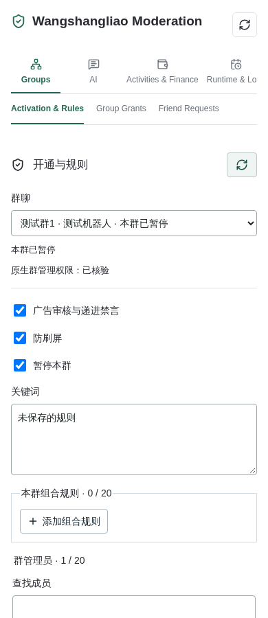
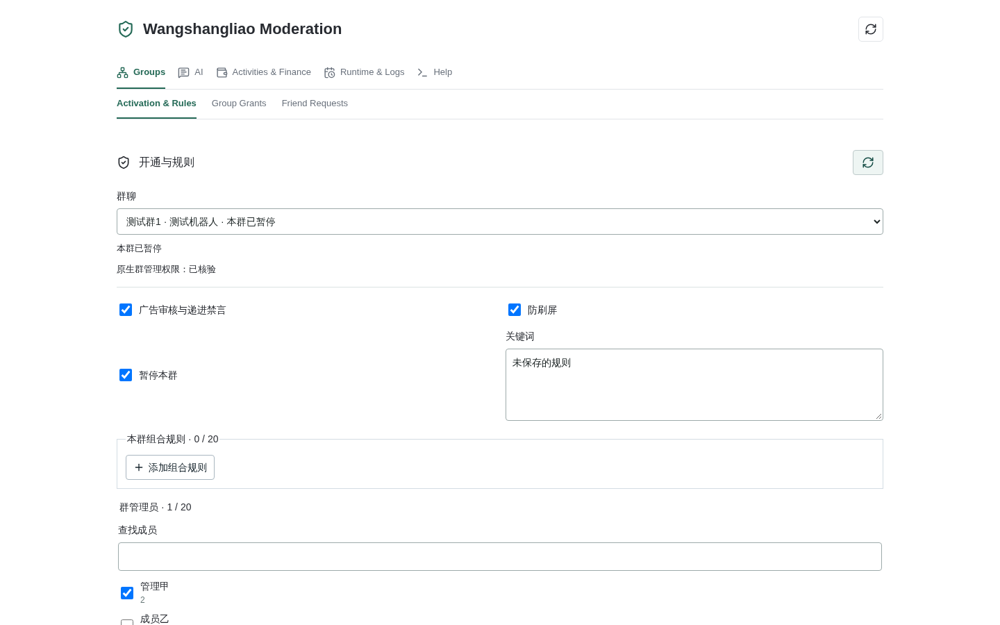

Updated October 20, 2026. Start with the beginner guide. The documentation index links the complete Chinese command, operations and acceptance references.
See the migration runbook for the adapter/plugin
configuration split, entry-point mapping, backup and rollout checks.
See current architecture and permissions
for integrated public mode. open_service.py owns inviter activation, group grants
and read-only AI. All chat AI tools are retired; group AI defaults off and requires
per-group opt-in. Native @, autonomous participation and idle topics all use the
account/group's group profile, never the private consultation persona. They share
a group persona, not members' mention histories. Group output is plain text without
【群聊AI】 or 【客服咨询】 prefixes; private read-only AI is unchanged.
With the user's authorization, these mention-routing, per-member history and
prefix-removal changes were loaded by a full astrbot.service restart on
October 20, 2026 at 09:47:09 UTC (17:47:09 Beijing), not a plugin reload.
New management labels are deployed. Group 1516387 now has group-AI version5
with enabled/mentions/autonomous/idle all false. The earlier 15:47:56 Beijing
autonomous-reply evidence is historical, not current enablement or new-version real-group acceptance.
Ordinary chat becomes model input
only with explicit autonomous opt-in: at most12 messages, held in memory for120s,
without archiving bystander messages or the candidate batch as AI dialogue.
Actual consultations and delivered group replies use AstrBot's native conversation
manager. Private /chat enters consultation; both modes share the
hard-budget gate. Dashboard may grant daily increases to current managers only.
Actual AI exchanges appear under Data & Logs → Conversations, filterable by
robot ID and private/group message type. Private consultation, group @ replies
and autonomous chat have separate native origins and link model statistics to
their conversation IDs. Mentions use the new key
platform:GroupMessage:account/group/wsl-ai/account/group/mention/verifiedUid/peer,
loading only that verified sender's bounded configured history. Members, groups,
accounts and private chats never share it; old group-consultation history is neither
migrated nor reused. Autonomous/idle origins retain /wsl-ai/account/group,
and autonomous candidate buffers are unchanged. Traces contain metadata, not prompts or credentials.
Only the actual question/selected target and delivered answer are recorded:
no system prompts, retrieved knowledge, tools, finance inputs, fixed commands,
or entire bystander batches. A silent decision records model usage, not a fake reply.
Private histories keep the configured number of turns (one exchange if context
is disabled); native group records are bounded to at most 20 exchanges. Mention
model context is further limited by the group profile; zero excludes prior exchanges.
The native dashboard owns viewing, deletion and export. A pre-write check skips
outdated snapshots when it detects deleted, switched or edited records.
/exit, expiry and settlement entry end active consultation. The next /chat
starts a new native conversation and never reloads the exited context. Existing
dashboard records remain until deleted there. Old plugin temporary histories
are not imported and no model request is made just to populate an empty page.
AstrBot owns configurations, personas, provider credentials, Chinese retrieval tokenization, technical logs, conversations, statistics and traces. Domain code still enforces scoped knowledge ownership, atomic shared cost reservations, financial transactions and authorization/receipts for fixed mute schedules; these must not become arbitrary native agent jobs. Recording failures emit a sanitized AstrBot warning without retrying model requests or replies.
The independent invitation cashback cashier registers
manual payments separately from points and lotteries, and starts disabled.
Existing dashboard and chat entry points remain unchanged.
Group invitation queries concern activity statistics; private 我的邀请 reads
the verified sender's cash records without exposing them to AI. When points rewards are not enabled, the reply
shows 每人奖励：管理员未设置奖励 instead of a separate status line.
The dashboard uses two levels: a category followed by a feature tab. Both rows scroll horizontally on narrow screens instead of forming a tall grid.
| Category | Feature Tabs |
|---|---|
| Groups | Activation & Rules, Group Grants, Friend Requests |
| AI | Customer Service, Admin Guidance, Group AI, Plans & Quotas, Model & Budget |
| Activities & Finance | Activities, Invitation Settlement, Settlement Grants |
| Runtime & Logs | Service Controls, Schedules, Audit, Operation Logs, Management Audit |
| Help | Commands, Chat examples, Architecture, Permissions |
Old-to-new mapping: rules previously inside Group Management / Open Service remain under Groups → Activation & Rules. Private AI, group AI, plans and budget settings move to the corresponding AI feature tabs. Financial grants move to Activities & Finance → Settlement Grants; the service pause switch and site call limit move to Runtime & Logs → Service Controls. Other former tabs are grouped as listed. Legacy Groups & Runtime and Moderation remain under Groups.
Each category remembers its last feature during the current page session. Switching tabs never submits changes. Rule and AI drafts survive navigation until an explicit save, refresh or group change. Plans and financial-grant panels mount on first visit and retain their inputs on return. Account/group authorization, chat commands, the separate cashier, formal-group switches and existing ledger data are unchanged.
These existing screenshots predate the group-mention route fix and use synthetic groups with unsaved inputs. They illustrate navigation, not current persona routing or enabled production groups:


The Python adapter runs inside AstrBot: business authentication, sealed session recovery,
NIM connectivity, verified directories, text transport, fixed moderation capabilities,
authorization, idempotency and receipts. No Rust bridge, DH workbench or pairing token is
required. AstrBot owns profiles, administrators, models, personas and knowledge bases.
The built-in plugin owns activation, independent group managers, fixed rules,
rankings, activities, schedules and read-only AI. admins_id does not
automatically grant public-group management authority.
Use Python 3.12+ and uv sync --extra wsl; build the dashboard with pnpm install,
pnpm generate:api and pnpm build in dashboard. The serialized local captcha worker
needs Node.js and OpenCV/ONNX, starts on demand and needs no GPU. Docker builds need
the project's INSTALL_WSL argument. Reinstall dependencies on the target OS/architecture;
available build entry points do not prove every architecture was tested.
Set ASTRBOT_WANGSHANGLIAO_CONFIG to a protected deployment JSON file:
| Field | Contract |
|---|---|
origin |
HTTPS service origin |
headers |
Protocol request headers |
metadata |
Fourteen integers |
signing_seed, body_key, message_key, server_key |
Standard Base64, each decoding to 32 bytes |
captcha_id, app_key, device_id |
Valid deployment parameters |
protocol_version |
Protocol for new logins: 2.8.3 selects desktop compatibility, 3.7.3 selects Android, and omission retains 3.7.1 compatibility. Saved sessions restore their own version, without converting credentials. |
Use mode 0600 on Linux/macOS or a service-account-only ACL on Windows. Never publish
credentials. Missing/invalid configurations return deployment_missing/deployment_invalid.
Legacy configs without message_key may authenticate but message startup returns
message_key_missing. When the variable is unset, an approved sealed import under
data/platform_data/wangshangliao/deployment/ may load. Invalid explicit paths do not fall
back. Importing protocol configuration does not import passwords or account sessions.
ASTRBOT_YIDUN_SOLVER_URL unset or builtin uses the local solver; empty means manual
verification; external HTTP remains a compatibility option. Automatic failure retains
manual recovery. .venv/bin/python scripts/check_wangshangliao.py is offline preflight,
not live acceptance.
Create/select a bot, complete password/SMS login and device verification, and save within the ten-minute login transaction. Public group activation uses group control, not login-page selection as an authorization shortcut. Authentication, saved configuration and an online NIM connection are separate states. Empty enabled groups disable group handling, not necessarily private chat. Disable-and-save retains recovery credentials; logout removes them but not ledgers. Re-login creates temporary authentication first; successful save replaces the old connection for the same account. A different account needs a new instance. Stop old automation before migration.
With official 3.7.3 authentication, enter the secondary security code only in the
authenticated Dashboard field when the provider requests it. It is never saved
or requested in chat. No field is shown when verification is not required.
Provider 1400 means the code is not set; 1402 means this sign-in is not yet
verified. Incorrect code 1403 requires at least a 30-second wait; 1404 requires
checking the lock in the official app, and 1405 requires binding a phone.
After successful verification, failed messaging setup can be retried without
resubmitting the code. Uncertain verification stops retries and requires a fresh
login. Do not disclose the code in logs, screenshots or chat.
Successful security verification does not require credential rotation. Prefer the response header, then a credential in the success body; if neither supplies a new credential, retain this login's credential and fetch the IM token. Absent or unchanged credentials do not imply an incorrect security code. Explicit rejection, malformed receipts and uncertain transport still stop without resubmitting the code. A verified IM token is required before saving completed authentication.
Current password and SMS login requests include version, appVersion and
appHash from the verified release, not just updated headers. Release 3.7.3 has
version code 335. A changed release requires new verification; do not guess its
code from the filename or reuse an old package digest. Official code 1001 is a
generic error, not proof of an incorrect password, an account ban or a security
code error. The Dashboard retains the numeric code without logging raw provider
responses or credentials and does not automatically retry login. Offline tests
do not establish successful real-account authentication.
The login panel's business-running/paused badge and enabled-group count follow the instance's runtime business state, not transport-only login configuration. Unavailable runtime status is shown as unverified rather than falsely paused. The panel also shows a connection reason and next step. Missing connection state or group counts stay unavailable rather than becoming "stopped" or zero. The error-details entry labels historical records explicitly: records can remain after recovery and do not establish a current outage. Unknown errors use fixed messages, never raw provider responses.
| State or notice | Meaning and next step |
|---|---|
| Authenticated; save login | Authentication only; save to connect instead of signing in again |
| Account online | Messaging is connected; group features still need separate authorization |
| Connecting or reconnecting | Recovery is attempted at intervals; not evidence of bad credentials or a ban; group actions wait |
| Platform rate limit | Respect the provider wait; avoid repeated login or refresh attempts |
| Messaging stopped | No active connection; disabling keeps the login; enable and save as needed, without deleting the instance |
| Session expired | Sign in again; ordinary network interruptions are not labelled session expiry |
| Security verification, lock or unbound phone | Follow the specific official-app instructions; enter codes only in the Dashboard, never chat |
| Sign-in conflict or duplicate instance | Check other devices and duplicate instances before signing in again |
| Group list or member permissions unavailable | Not proof of logout; refresh and verify; related sensitive group actions pause without deleting settings |
| Business paused or zero enabled groups | No automated group processing; login, private messaging and historical ledger remain separate |
| Connection or business status unavailable | No verified state yet; do not infer failed login, a ban or empty configuration |
Business pause follows the instance's runtime gate, not an empty operating-group list or an offline connection. Operating counts exclude inactive, absent, paused, unverified or membership-pending groups and respect capacity suspension; saved group rows alone do not establish that a group is running. When messaging stays online but the group directory explicitly requires reauthentication, the page separately requires sign-in. Transport is not falsely marked offline, nor does its online status establish working member reads or settlement.
business_auth separately exposes credential state and device class, never device
identifiers, credentials or keys. credential_present means credentials exist,
not that all business APIs were verified. A definitive 401 from any business
request marks authentication expired; subsequent authenticated requests fail
locally. The UI shows this even when a previous directory read succeeded.
Transport errors and 1400 are not presented as confirmed device conflicts.
Running on a server does not make an Android login a desktop login. The client's
device classes identify desktop as 1 and Android as 3. Android 3.7.3 uses
Android-specific device, client and signing bindings. A phone sign-in may
invalidate it; this is not proof that official desktop/phone coexistence was
removed.
The desktop 2.8.3 compatibility branch follows the published desktop signing
version, device and client identifiers, current get-nim-token route and stable
IM device ID. It still verifies the server's bound login token and any required
secondary verification. It neither relabels Android credentials nor fabricates
Android installation hashes.
IM connections preserve the token endpoint's static, dynamic or callback authentication mode. Callback tokens are not sent as static tokens. Unknown modes fail closed without falling back to a static token; diagnostics never include tokens or raw authentication responses. Legacy replies without a mode retain static compatibility.
After an operator selects the new-login protocol, a new Dashboard sign-in and save are required. Saved Android, legacy and desktop sessions restore their own protocols. Deployment changes and restarts do not convert credentials, reset device IDs, automatically sign in again or delete ledgers. Offline desktop tests are not live coexistence acceptance: a successful fresh sign-in and business reads after another phone sign-in remain necessary evidence.
Connectivity, group-list reads, complete member reads and enabled business scope are separate checks. Member-read failures no longer all say the public service is disconnected: fixed notices distinguish identity conflicts, incomplete rosters, size limits, provider rejection, security verification and rate limits. Diagnostics use AstrBot's native logger without payloads or credentials. Partial rosters never authorize management or settlement, and reads are not blindly retried.
Runtime receive_health separates unhandled non-chat packets, invalid packets,
decode failures and unsupported message formats. decode_reasons contains only
fixed processing stages, never plaintext, ciphertext, keys or raw responses.
Non-chat packets no longer increment unsupported_pushes; they retain a separate
counter without claiming support. The login panel warns only on actual decode
failures. Counters cover the current run; old aggregate totals cannot be
retroactively assigned to these categories.
decoded_messages counts actual successful decodes. Bounded decode_shapes
summarize field numbers and wire types only, never field values.
Reception supports legacy envelopes and the official 3.7.3 MessagePacket
version 1. Both the metadata AEAD and inner message AEAD must pass; packet
metadata cannot confer identity or permissions. A zero compression marker still
requires authentication and routing checks, never plaintext trust. Unknown packet
versions, nested packets and either authentication failure are rejected. The
ordinary-message 1 MiB limit is unchanged.
The integer wire variants accepted by the official codec are normalized before
authentication; conflicting encodings of the same field are rejected.
Live traffic still includes envelopes without authentication fields. They remain
rejected and cannot reach moderation, AI or settlement. Full compatibility is
not claimed; further support requires trustworthy format evidence.
Friend approval reconciliation reads current applications and resolves uncertain attempts before a version-checked resume. Failed reads or unresolved attempts keep the hold, without resubmitting approval. Login recovery does not migrate cashback collection, grant financial authority, enable production groups or confirm a provider hard budget.
Instance IDs, business UIDs, display accounts, business group IDs, display group numbers and
NIM IDs differ. Administrators and native At.qq use business UIDs; APIs/grants use business
group IDs. Nicknames and typed mentions do not identify targets. Incomplete/inconsistent
directories prevent moderation instead of authorizing actions from partial mappings.
The management page's current-group selector also lists joined but disabled groups, marked "Not enabled" and unavailable for actions. Group-name refreshes are cached for up to 30 seconds. Select and save groups under Groups & Runtime before processing; joining alone grants no moderation, proactive sending or cashback authority.
The legacy default keyword file contains 36 instance-wide rules. Newly activated public groups start with their own empty keyword list, not that production list. Broad words, short numbers and domain suffixes require advertising context; domain suffixes must match an actual hostname. Reports, quotations, ordinary numbers and lone links do not directly trigger sanctions. Explicitly cleared lists stay empty.
Built-in combinations, updated from locally retained administrator-recall evidence on 2026-10-17, also detect payment-account screenshot recruitment, timed social-account rewards, paid nearby-user recruitment, influencer-material solicitation, guaranteed project recruitment, paid-prediction referrals and spelling variants of edited-image betting promotions. A topic word alone is insufficient; reports and explicit quotation prefixes remain exempt. These combinations also apply with an empty custom keyword list, but never bypass a group's advertising switch, permissions or message-age checks. Native group/contact numbers are content evidence, never identity or authorization. Missing recalled originals are not inferred to be pictures or advertisements. Historical classification does not replay sanctions, enable paused groups or change cashback records.
Server-maintained speech exemptions are stored in the collector's native data
directory as member_exemptions.sqlite3. They match the bot account, group,
member UID and authenticated NIM identity exactly. They suppress automatic
advertising, media and flood sanctions only, without granting management,
configuration, AI quota or financial privileges. Admission and pre-submit guards
recheck exemptions. Records remain until explicitly revoked by the server;
historical sanctions, uncertain receipts and other administrators' actions are
not removed or overridden. Nicknames and forwarded content cannot create exemptions.
On 2026-10-20, retained manual-recall texts informed six additional combinations: explicit registration-credit offers, task solicitation with a contact number, complete nearby-user hourly-pay offers, numbered project-group recruitment, paid forwarding with an external group destination, and odds solicitation with a tagged contact number. Each requires its own combined evidence; ordinary discussion, lone numbers, reports and explicit quotations do not qualify. Manual recalls are not automatic violation labels, and harassment or disputes are not relabeled as advertising. The additions require no model calls, platform requests or history scans. They retain group advertising switches, custom keywords and the existing sanction sequence.
Generation responses report tokens in usage. The current relay separately exposes
read-only /v1/usage aggregates with cost and discounted actual_cost; do not
apply the multiplier twice. The receipt currently declares USD and
mode=unrestricted, not verified CNY deductions or proof of an enforced supplier cap.
These aggregates alone never unlock public model calls.
On 2026-10-20, explicit free betting-credit solicitation and no-funds recruitment phrases were added. A fresh 5–12 digit contact can be correlated with up to 64 native inbound messages from the preceding 120 seconds, restricted to the same account, group, sender, rule revision and test generation. Evidence requires explicit solicitation before the number, or a broadcast-start cue followed by the same number at least twice. Bare numbers, ordinary counts, reports, recalled messages and stale history do not qualify. Flood thresholds remain unchanged; old messages are not replayed. The audit page now shows the current scoped member name above the immutable account ID. Missing directory labels may fall back only to an exact original-message and sender match within the same account and group, explicitly marked "Historical name". Otherwise the page shows "Name unavailable". Labels never authorize actions or trigger platform directory requests.
Rule outcomes now separate the original recall from the warning send receipt and any
historical warning cleanup. The October 20 warning fix was loaded by the full backend restart above:
native actions.py no longer forces auto_recall=False or trusts caller-supplied
userName/ID labels. An exact match in this account/group's authoritative complete
roster supplies the real nickname for a native mention. Verified identity without a
nickname sends warning text only, never an opaque-ID mention; identity mismatches
still suppress delivery. auto_recall=True schedules cleanup twelve seconds after
an actual send receipt. This was not a plugin reload. The deployment stage sent no
warning; subsequent three-account tests in 1459282 verified three real warnings
across two isolated fixtures containing one and two warnings, not a complete
first/second/third progression in one fixture. Native userNick supplied @大蛤
with the verified target, rather than groupMemberNick=testfork. The peer observed
original-message recalls and warning delivery/self-recalls; warning receipt-to-recall
notifications took 12.112/12.115/12.125 seconds, not measured phone disappearance.
Rules and the receiver's original native-member role were restored, and windows closed.
Formal groups, finances and normal punishment counters were unchanged; native
receipts/minimal audit were retained. Testing used zero model calls, no extra NIM
connections and no service restart. Mute escalation, complete functionality and phone
rendering were not tested; see isolated acceptance.
The 619 passing tests precede
the missing-nickname fallback refinement and remain historical, not final acceptance;
see current architecture and permissions for final offline results.
A failed notification does not erase an accepted sanction; platform acceptance
is not a read receipt. Dated evidence remains unchanged; old warnings and sanctions are not replayed.
The separate Recall Sources table reads up to 200 scoped native notices, deduplicates by
message and native identities, and displays at most 50, ordered by event time when valid.
Bot execution requires a matching accepted local receipt and native bot identity;
command/reply cleanup, author recalls, other-member recalls and unverified sources remain
distinct. A manual recall from the official app under the bot account is not automatically
reported as an automated sanction. Notifications do not replace phone-screen verification.
BOT_INSTANCE:GroupMessage:BOT_BUSINESS_UID/GROUP_BUSINESS_ID
BOT_INSTANCE:FriendMessage:BOT_BUSINESS_UID/private/PEER_BUSINESS_UID/BASE64URL_NIM_ID
Choose known authenticated conversations, never fabricate UMO. Local known peers are not
a complete cloud directory. Current group AI is a separate, off-by-default
per-group option, never a generic framework route. Autonomous opt-in adds only
bounded, short-lived recent group context, not persistent observation history.
Fixed commands match the entire message without /, 群管 or a mention.
Group text quotes now bind to exact authenticated inbox evidence; recalled or
changed references fail closed. Private quote decoration still degrades to text.
Native quote rendering remains subject to controlled phone verification. Media transport
is outside current capability.
Group and private chats share fixed commands with an optional 管理 prefix.
Group commands bind the current group; private 群列表 and 选择群 1 select
only groups explicitly granted to the caller under the receiving bot account.
Send 菜单 for numbered navigation, 0 to go back and 取消 to exit.
Menus grant no authority. See the command tree
and current permissions.
Only private /chat enters read-only consultation; /exit ends it immediately.
Native group @, autonomous replies and idle topics resolve the group profile under
the per-group gate. mentions remains independent of autonomous; ordinary
messages require separate autonomous opt-in. All management and own-invitation
model tools are retired, and the old configurator only refuses execution.
Public mode disables semantic model review and blocks public models until
supplier hard-budget enforcement is verified. Historical multi-route/tool
descriptions are not current setup instructions.
The former Private Consultation tab is now Customer Service. The independent Admin Guidance profile enables verified scoped routing after its first save. Group managers, cashiers and financial administrators receive only their own scopes' guidance; models retain no operational tools. See administrator routing. Native group @, autonomous replies and idle topics still use Group AI. Four numeric controls are now low/medium/high selectors, with an inheritance option and unchanged legacy custom values. See the profile preset table.
Private 我的邀请 lists enabled cashback group names and numbered sender-only
records without UIDs or other users' data. Business grants bind platform,
account and group. admins_id provides verified AI-count exemptions, not public
group authority. Dashboard login, chat grants, native roles, action grants and
financial identity remain separate.
Navigation change: Friend Cleanup is removed. Automatic acceptance now lives under the AstrBot Wangshangliao plugin management page → Friend Requests. All friend deletion UI, API routes, execution code and the SDK deletion wrapper are removed. Old pages and direct requests cannot delete friends. Historical audits, conversations, invitation records and group memberships are retained. Automatically Accept Friend Requests is stored separately for each bot account and enabled by default. An explicit disabled setting survives reloads. Only authenticated incoming requests in the provider's pending state are eligible; receiving a private message does not create a friendship. Each scan accepts at most one request, with at least three seconds between its list, acceptance and verification requests. Acceptance actions have a persistent 30-second cooldown. Offline or paused business service stops processing. Rejection or an uncertain result halts acceptance without automatic retries; toggling the setting does not clear that hold. Acceptance grants no administrator permissions. Neither chat users nor AI tools can change this setting or operate friendships. Pacing cannot guarantee avoidance of provider restrictions; verify real incoming requests against both logs and the mobile client.

In the bot's moderation capabilities, choose a group, grant ordinary member card
renaming, set the optional group card suffix, enable automatic normalization and save.
The plugin page provides the same per-group suffix. moderation.card_suffix maps group
IDs to text, defaults to empty and allows up to 128 UTF-8 bytes without line breaks or
control characters. The resulting card uses the first two complete Unicode graphemes
of the current group card (account name when unset), followed by the suffix. A one-character
name is preserved; only an empty name uses a persistent generated fallback.
Repeated scans do not append the suffix again. Changing a suffix invalidates older batch
previews and reprocesses previously handled members for that group. Explicit single-member
custom cards do not receive this suffix. Owners, administrators and connected bots remain
protected. Error moderation_permission means saved bot/group grants or upstream administrator
permissions are missing, not a server crash. Natural-language suffix settings still require
an authenticated private preview and separate confirmation.
Saved ai_routes.groups maps business group IDs directly to provider-ID strings.
customer_provider_id is the page/API input name, not a nested saved-group object.
reply_private and unspecified reply_groups default true; enabled groups are still required.
proactive_send.enabled and moderation booleans default false.
Audit timeout defaults12 seconds (1..30), context count defaults20 (1..50),
cooldown defaults60 seconds (10..86400). Keywords: at most50 per list,100 characters each.
Proactive sending defaults off and needs the switch plus exact destination grants.
private_peer_unknown requires a real authenticated conversation, not synthetic records.
Managed-bot tests additionally need a receiving-side window.
Authenticated POST /api/v1/im/messages uses a known umo and components: plain for
text and at.qq for a string business UID, not NIM/nickname. Follow its operation-ID
contract; query GET /api/v1/im/operations/{operation_id}?platform_id=BOT_INSTANCE,
never resend to check delivery. accepted is not delivery or readback; verified requires
capability-specific verification; unknown is not blindly retried; needs_review retains
interrupted processing without regenerating.
IM access needs Dashboard JWT or supported im-scoped API authentication. Use a stable
caller-owned operation_id (1..256 characters) for each business operation; do not change
content under an old ID or use a new ID to blindly retry an uncertain request.
Storage is under data/platform_data/wangshangliao/<64_HEX_DIRECTORY>/, including
session.key, session.sealed and message/moderation/cards/activities/schedule databases.
Integrated mode's protected account-roots.json binds each account to its existing
directory across instance recreation; first binding uses the instance-ID SHA-256.
Never delete a supposedly old directory by recomputing the current instance hash.
Same-host sealing does not protect against the host administrator. Protect backups as
credentials. Messages persist before ACK; control, fixed commands and ordinary
messages use separate slots, bounded backlogs and same-session ordering.
Current capacities are listed in maintenance.
Group commands and inputs in the sender's own active menu are scheduled for recall
twelve seconds after receipt. Every accepted command-reply segment expires after twelve
seconds, including menus, activation, ranking, lottery signup and status replies.
Legacy keep-reply flags no longer exempt group commands. Original commands require native
group-management permission, the recall grant and exact authenticated inbox routing.
Platform rejection is recorded, never reported as success. Cleanup does not count as a
violation or undo an already submitted command.
The self-recall worker wakes for committed jobs and their nearest deadlines, with a 30-second empty-queue fallback instead of half-second database polling. New commits wake it immediately; account, group and permission checks still apply at execution, and unknown outcomes are never replayed. Routine incoming recall observations use AstrBot DEBUG logs. Action receipts, warnings and errors retain their levels; disabled debug records do not compute identity hashes. Ordinary conversation, numbers outside the sender's menu, private messages, ordinary AI, announcement bodies and proactive activity notices are unaffected. Moderation warnings have separate receipt-backed twelve-second recall in the loaded fix above; this deployment sent no real warning and does not establish real-group effect acceptance. Jobs persist; over-five-minute overdue jobs expire; uncertain attempts are not retried. Twelve seconds is the scheduling deadline, not a hard real-time guarantee during disconnection, backlog or external platform delays.
AI output becomes plain text, preserving links/native mentions and disabling text-to-image
for those results. Paired think/thinking/thought/analysis blocks, leading unclosed tags and
orphan closing tags are filtered. This does not cover every streaming path/unlabeled reasoning
and may leave an empty answer. Limited credential/contact masking is not DLP or input/history/log
sanitization.
Managed bots, including disabled instances, are excluded by default. Configure a window on
the receiving bot, with the sender as source. Saving scope does not start the window.
Explicitly activate it; at most300 seconds/ten inbound events, in-memory, invalid after
restart/stop/account replacement. Reverse traffic remains excluded. Private AI, private/group
commands and group rules are separate; group rules use WSL_TEST_ in a specified group.
Windows grant no authority and do not replace ordinary external-account acceptance.
When all three controlled accounts are already online, use
check_wsl_three_live.py without opening another NIM connection. The runner checks
the current native roster and does not change native roles by default; assign Dahu
as administrator in the official App first. Explicit --manage-test-role permits
temporary grant/restore under the same persistent daily limit. Cached roles cannot
replace native verification, and counters must not be reset to resume writes.
The dashboard-only
test_probe action sends one command or test-marker message from the fixed test
account to group1459282. It requires the receiver's active window, the exact
three-member roster and at least three seconds between messages. Unknown outcomes
are never replayed. No arbitrary group, method or URL is accepted; the sender's
normal group business remains disabled. Restore temporary native roles afterwards;
chat finance continues to use the explicitly labeled separate test ledger.
Within that same window, the inactive test tenant may retain at most twenty native
text replies from the fixed receiver in1459282 as ignored-message evidence. These
observations preserve the sender and native mentions without entering commands,
models or group-management execution.
They retain upstream timestamps and the test-send correlation, reject pre-probe
history, and use a separate transaction that rechecks authority after database
waits and immediately before commit. Revocation or cancellation rolls back only
that witness, without affecting ordinary ingress, outbox receipts or other writes.
Acceptance additionally
requires matching the exact native outbox receipt for the operation.
The dashboard-only test_guides action replays exactly the two reviewed guides
to1459282 within that original window, consuming two outbound test slots and
retaining the three-second native send interval. It accepts only a bounded test
operation ID, never an image path, URL or different group. Window replacement,
pause, departure or authorization-version changes stop pending sends.
check_wsl_three_guides_live.py --apply correlates independent native image ingress,
outbox receipts and original/thumbnail digests. It neither resets first-welcome
markers nor counts replay as first-friend acceptance or official-phone display proof.
Managed-account rule protection is bypassed only for an exact message already
admitted as group_rules by the original live window in1459282.
Closure, expiry, identity or policy changes invalidate this narrow authority;
it grants no manual member-operation permission.
Random per-window evidence generations isolate flood accumulation and recalled
messages. Database and send waits retain the original guard; closing or replacing
the window cannot authorize old sanctions under a new window.
Completed flood-batch mute receipts are also isolated per test window. Further
messages within the same window add recalls without another mute; ordinary
production burst coalescing is unchanged.
Since all three accounts are managed bots, lottery evidence covers managed-entrant
refusal, an empty draw and native delivery only. It neither disables participation
protection nor proves ordinary member enrollment or winner delivery.
The explicit --phase lottery-member alternative admits the fixed test entrant
only in the original live window after verifying the exact owner/robot-admin/member
roster. Dashboard-only test_lottery may start, draw or cancel that window's one
marked test activity; it does not modify saved reward settings or pay prizes.
Entrant messages use actual ingress, while owner start/draw are labeled
dashboard-test, not claimed as native owner-chat evidence. Closure, replacement,
revocation or pause stops pending publication; unknown outcomes are not replayed.
check_wsl_three_card_live.py is a separately confirmed isolated card test:
the same fixed roster, at most one rename and one restoration, private test storage,
no production card-job writes and no additional NIM connection. Production
managed-target protection remains intact; this is not chat-entry acceptance.
For silence check receiving direction, saved replies, native mentions, ignored_bot, window
and effective profile. For private denial distinguish fixed commands from consultation.
For blank pages check generated assets, browser errors and login proxies; do not loosen iframe
sandbox. Missing activity/schedule routes require matching running backend/plugin/page versions.
For unknown actions/backlog inspect durable results, do not delete databases or replay actions.
The current formatting regressions pass. If native-mention spacing or ranking line breaks still differ, inspect the actual native mentions and message parts; offline results do not replace confirmation in the official mobile client.
See acceptance and maintenance. Offline tests/historical screenshots do not prove full live isolation, peer delivery or continuous-operation stability.